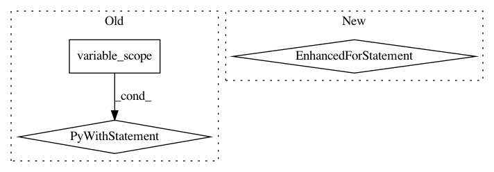

6fe998295efee06541295a086d57dc2a10f230b7,opennmt/utils/transformer.py,,multi_head_attention,#Any#Any#Any#Any#Any#Any#Any#Any#,67
Before Change
input_dim = keys.get_shape().as_list()[-1]
head_dim = input_dim / num_heads
with tf.variable_scope("multi_head"):
for i in range(num_heads):
with tf.variable_scope("head_" + str(i)):
// Project queries, keys and values to different and smaller subspaces.
queries_proj = tf.layers.dense(
queries,
head_dim,
use_bias=False)
keys_proj = tf.layers.dense(
keys,
head_dim,
use_bias=False)
values_proj = tf.layers.dense(
values,
head_dim,
use_bias=False)
head_i = scaled_dot_attention(
queries_proj,
keys_proj,
values_proj,
mode,
values_length=values_length,
mask_future=mask_future,
dropout=dropout)
heads.append(head_i)
// Concatenate all heads output.
return tf.concat(heads, axis=2)
def feed_forward(x, inner_dim):
Implements the Transformer"s "Feed Forward" layer.
ffn(x) = max(0, x*W_1 + b_1)*W_2 + b_2
After Change
input_dim = keys.get_shape().as_list()[-1]
head_dim = input_dim / num_heads
for i in range(num_heads):
with tf.variable_scope("head_" + str(i)):
// Project queries, keys and values to different and smaller subspaces.
queries_proj = tf.layers.dense(
queries,
head_dim,
use_bias=False)
keys_proj = tf.layers.dense(
keys,
head_dim,
use_bias=False)
values_proj = tf.layers.dense(
values,
head_dim,
use_bias=False)
head_i = scaled_dot_attention(
queries_proj,
keys_proj,
values_proj,
mode,
values_length=values_length,
mask_future=mask_future,
dropout=dropout)
heads.append(head_i)
// Concatenate all heads output.
return tf.concat(heads, axis=2)
def feed_forward(x, inner_dim):
Implements the Transformer"s "Feed Forward" layer.
In pattern: SUPERPATTERN
Frequency: 4
Non-data size: 3
Instances
Project Name: OpenNMT/OpenNMT-tf
Commit Name: 6fe998295efee06541295a086d57dc2a10f230b7
Time: 2017-08-16
Author: guillaume.klein@systrangroup.com
File Name: opennmt/utils/transformer.py
Class Name:
Method Name: multi_head_attention
Project Name: asyml/texar
Commit Name: 49107396aaa0339f1b2dbf43490b9df0417e4675
Time: 2018-08-22
Author: zhitinghu@gmail.com
File Name: texar/modules/memory/memory_network.py
Class Name: MemNetRNNLike
Method Name: _build
Project Name: dpressel/mead-baseline
Commit Name: bfd0068e7a0922c06cdeff346a6c6339f98ae256
Time: 2019-11-19
Author: blester125@gmail.com
File Name: python/eight_mile/tf/layers.py
Class Name: BiLSTMEncoder1
Method Name: call
Project Name: rlworkgroup/garage
Commit Name: 5c42053fcd6821eb39eded56526cfe5f2070418a
Time: 2018-05-25
Author: 35857569+gonzaiva@users.noreply.github.com
File Name: sandbox/rocky/tf/optimizers/penalty_lbfgs_optimizer.py
Class Name: PenaltyLbfgsOptimizer
Method Name: update_opt